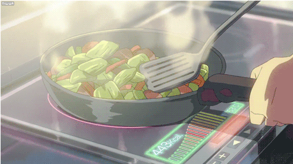

Ingredients
- 400g spaghetti
- 500g minced beef
- 1 onion, finely chopped
- 2 cloves garlic, minced
- 1 carrot, finely chopped
- 1 celery stalk, finely chopped
- 2 tablespoons olive oil
- 1 can (400g) chopped tomatoes
- 2 tablespoons tomato paste
- 1 teaspoon dried oregano
- 1 teaspoon dried basil
- Salt and black pepper to taste
- Parmesan cheese for serving
Method

- Heat the olive oil in a large pan over medium heat.
-
Add the chopped onion, carrot, and celery and cook for 5–7 minutes
until softened.
-
Stir in the minced garlic and cook for another minute until fragrant.
-
Add the minced beef to the pan and cook until browned, breaking it
apart with a spoon.
-
Stir in the tomato paste and cook for about 2 minutes to deepen the
flavour.
-
Pour in the chopped tomatoes and mix well with the meat and
vegetables.
- Add oregano, basil, salt, and black pepper to taste.
-
Reduce the heat and let the sauce simmer gently for about 20–30
minutes, stirring occasionally.
-
Meanwhile, cook the spaghetti in salted boiling water according to the
package instructions.
- Drain the pasta and serve topped with the rich Bolognese sauce.
-
Finish with freshly grated Parmesan cheese and enjoy your homemade
Italian classic.